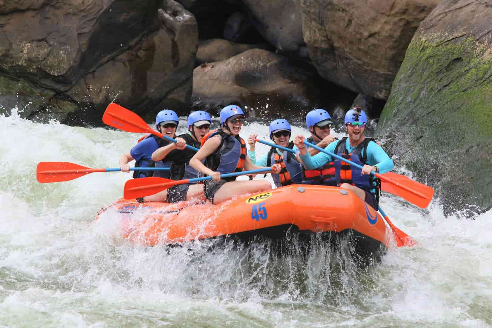
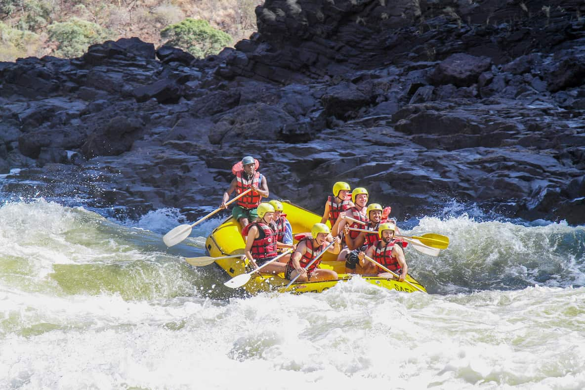
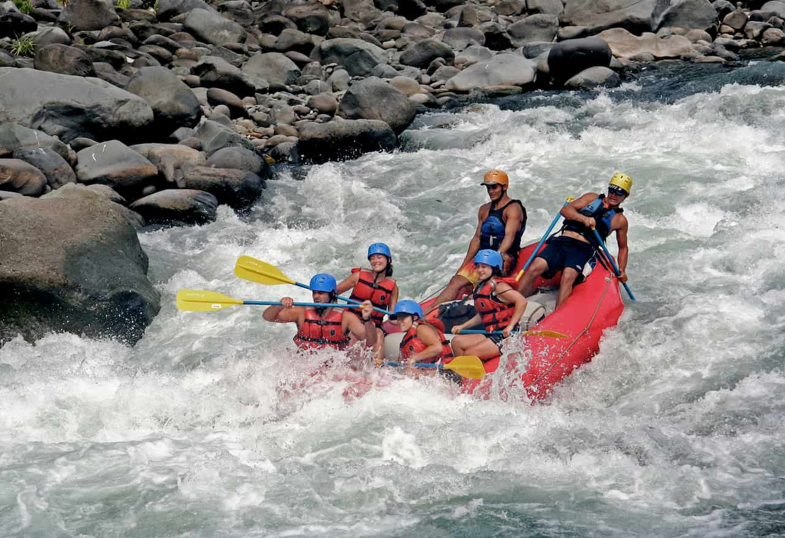

1. Best For: First-timers, multi-generational families, and young kids (Ages
5+).
2. Difficulty: Class I - II (Gentle ripples, calm pools, and small wave
trains).
3. Duration: Half-Day (Approx. 2.5 hours on the water).
The Experience:
Leave the rush of everyday life behind and drift down the most scenic, tranquil
stretch of the
river. The Family Float is designed specifically for those who want to
experience
the beauty of the
river canyon without the high-stress adrenaline. Your expert guide handles all
the
heavy
maneuvering, allowing you to relax, take in the towering rock formations, and
watch
for local
wildlife like bald eagles and river otters.
Halfway through the journey, we’ll pull over to a pristine, sandy river beach
where
the kids can
swim in the calm, sun-warmed eddies while adults enjoy complimentary cold
refreshments and local
fresh fruit. It’s the perfect introduction to moving water, combining just
enough
light splashes to
keep everyone cool with total peace of mind.
What’s Included: Premium life jackets (PFDs), helmets, paddles, professional
guide
in every raft,
splash jackets if chilly, and riverside refreshments.

1. Best For: Active adventurers, first-time weekend warriors, and corporate
groups.
2. Difficulty: Class III (Exciting, bouncy rapids with clear channels).
3. Duration: Full-Day (Approx. 5 hours including a riverside lunch).
The Experience:
Ready to grab a paddle and lock into a rhythm? This is our most popular trip,
offering the perfect
balance of rolling adrenaline and breathtaking canyon scenery. After a thorough
dry-land safety
briefing and paddle practice, you’ll drop straight into a series of continuous,
punching Class III
rapids that will test your teamwork and get everyone thoroughly soaked.
You’ll spend the morning conquering signature rapids like “The Meat grinder” and
“Drop Zone,” working
directly with your guide to navigate tight technical lines. At midday, we step
off
the rafts and
onto a private riverside deck where our crew serves up a hot, deli-style buffet
lunch with grilled
options. The afternoon brings a mix of beautiful canyon drifting and a grand
finale
rapid that will
leave your heart pounding and your crew cheering.
What’s Included: All safety gear, professional paddle coach/guide, full buffet
riverside lunch, and
a digital gallery of high-resolution action photos from the biggest rapids.

| Trip Logistics |
Details & Requirements |
| Price |
$79 Adults / $55 Children (Ages 5-12) |
| River Intensity |
Class I - II (Gentle ripples & scenic splashes) |
| Duration |
Half-Day (Approx. 2.5 hours on the water) |
| Departure Times |
9:00 AM and 1:30 PM Daily |
| Minimum Age |
5 Years Old (Must fit securely in a youth PFD) |
| What to Bring |
Swimsuit, water shoes, sunscreen, and a change of dry clothes
|
1. Best For: Experienced rafters, strong swimmers, and extreme thrill-seekers
(Ages
16+).
2. Difficulty: Class IV - IV+ (High-consequence, fast-moving, massive drops and
tight maneuvers).
3. Duration: Full-Day (6 action-packed hours).
The Experience:
This is not a sight-seeing cruise,this is a high-octane battle with gravity and
roaring whitewater.
Reserved strictly for the bold, our Adrenaline Junkie Expedition takes you deep
into
the sheer,
narrow gorge where the river drops violently over volcanic boulder gardens. To
tackle these rapids,
every participant must be prepared to paddle hard, listen carefully, and react
instantly to sudden
guide commands.
You will plunge through massive, exploding wave holes, negotiate technical steep
drops, and
experience the pure rush of pure Class IV white water. Because this stretch
demands
precise
execution, we maintain a strict low guide-to-guest ratio and utilize our most
seasoned swift water
rescue professionals. If you are looking to push your limits and see what the
upper
thresholds of
white water rafting feel like, this is your trip.